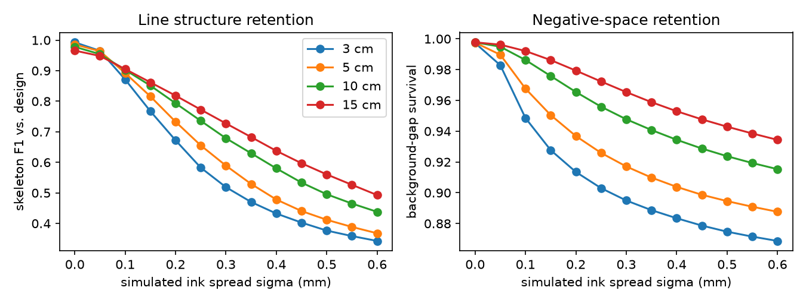
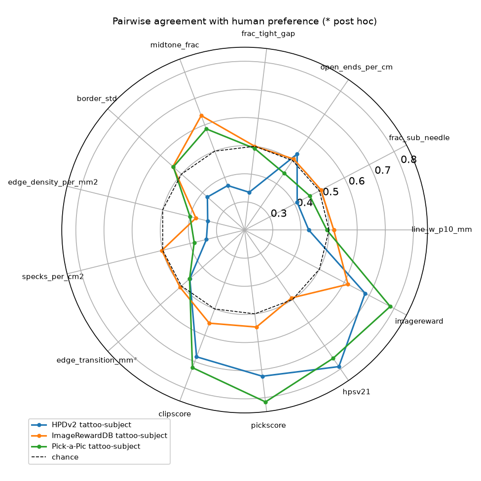
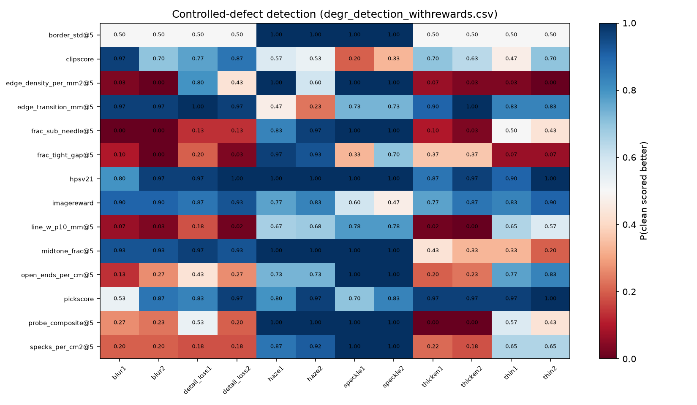

Paper
YUZHU CONG. Preference ≠ Tattooability: Auditing Reward Models for AI Tattoo Generation. 2026.
Cite: doi:10.5281/zenodo.23292900
TL;DR
- Physically scaled CPU probes (needle 0.30 mm, gap 0.50 mm, 10 px/mm) evaluated at print sizes 3 / 5 / 10 / 15 cm.
- On HPDv2 tattoo-subject pairs, a-priori probes agree with human preference below chance; the contrast survives a Holm correction across scorers.
- CLIPScore, PickScore, HPSv2.1 and ImageReward track preference (and flag many injected defects), but HPSv2.1 / ImageReward are in-distribution on their training sets.
- A print-scale × ink-spread stress test (isotropic Gaussian assumption, not a healed-skin model) shows skeleton retention falling as size shrinks and spread widens.
- Nothing here ranks a commercial AI tattoo generator.
What this repo is for
Researchers and engineers who need reproducible, CPU-only checks of whether an image looks like it could survive transfer to skin at a given print size — separate from “which image people prefer in a pairwise UI.”
If you are exploring an AI tattoo generator for design ideation, these probes are a research companion: they do not score Tatany or any other product.
Figures

figs/).

Reproduce
python3.13 -m venv .venv
.venv/bin/pip install -r requirements.lock.txt
# Follow scripts/dl_public_data.md — third-party images are not redistributed
.venv/bin/python scripts/run_probes.py
.venv/bin/python paper/check_numbers.pyLinks
- Zenodo record: https://doi.org/10.5281/zenodo.23292900
- Source: https://github.com/Stark-Will/tattoo-probes
- Product / design tool: https://tatany.app · AI Tattoo Generator
Licence & data
Code: MIT. No HPDv2 / ImageRewardDB / Pick-a-Pic / Drozdik images are redistributed — see data/LICENSES.md.